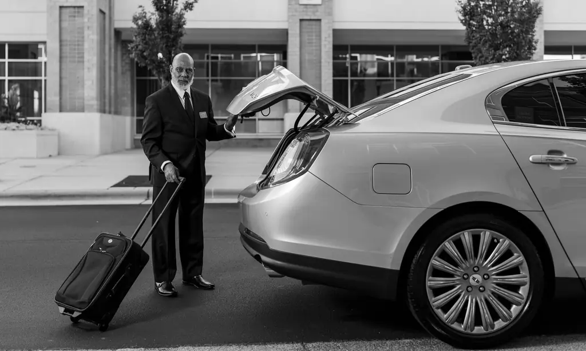

Aéroport Marseille-Provence
Depuis Marseille et les communes voisines, dans les deux sens, prix fixe par zone.
Aéroport, gare, port : le prix est annoncé avant de monter, pas à l'arrivée.
Réservez votre taxi pour Marignane, Saint-Charles, Aix TGV ou le terminal croisières : vous connaissez le prix fixe à la réservation, bagages compris. Paiement par carte à bord.
Réponse en moins de 10 minutes, de jour comme de nuit.

Cliquez sur votre trajet : le formulaire de réservation se remplit tout seul.
Nos trajets
Depuis Marseille et les communes voisines, dans les deux sens, prix fixe par zone.
Saint-Charles, Aix-en-Provence TGV, Blancarde : ponctualité garantie avant votre train.
Transferts entre hôtel, gare, aéroport et port, avec les bagages.
Réservation ou course immédiate, au compteur ou prix fixe annoncé.
Cassis, calanques, Aix, Luberon : prix fixe pour la journée ou le trajet.
Facturation mensuelle pour les entreprises et les hôtels.
Comment ça se passe
Départ, destination, date, heure et nombre de passagers.
Vous recevez le prix par SMS. Vous validez, c'est réservé.
SMS avec le numéro du taxi 15 minutes avant la prise en charge.
Carte, sans contact ou espèces, facture sur demande.
Trajets récents
Marseille 8e → Aéroport
Gare Saint-Charles → Terminal croisières
Aix-en-Provence → Aix TGV
Nos engagements
Sofiane Belkacem, gérant, chauffeur de taxi
« Prix annoncé par SMS la veille, exactement celui payé le lendemain. Enfin un taxi pour l'aéroport sans mauvaise surprise. »
« Taxi réservé pour notre croisière, chauffeur ponctuel et adorable avec les enfants. »
Questions fréquentes
Votre question n'est pas là ?
Appelez-nous au 06 39 98 27 15.
Le prix dépend de votre adresse de départ et de l'heure. Nous vous l'annonçons à la réservation et il ne change pas, bagages compris.
Oui, tous nos taxis acceptent la carte bancaire et le sans contact. Une facture peut vous être envoyée par e-mail.
C'est conseillé pour l'aéroport et les gares, surtout tôt le matin. Pour une course immédiate, appelez-nous directement.
Jusqu'à 4 passagers en berline et 7 en van. Précisez le nombre de valises à la réservation.
Donnez-nous le numéro du train : le chauffeur adapte son heure d'arrivée.
Oui, nous déposons et reprenons les visiteurs aux accès des calanques, avec un prix fixe annoncé.
Oui, nous planifions les trajets avec des horaires convenus à l'avance, et un prix annoncé pour chacun.
Les chiens guides d'aveugle sont toujours acceptés. Pour les autres animaux, prévenez-nous à la réservation : le chauffeur confirme selon le véhicule.
Réservation
Indiquez votre trajet : vous recevez le prix fixe par SMS en moins de 10 minutes.
24 h/24, 7 j/7
12 boulevard des Dames, 13002 Marseille
Nous intervenons à Marseille, Aéroport Marseille-Provence, Gare Saint-Charles, Gare d'Aix-en-Provence TGV, Terminal croisières, Aix-en-Provence, Cassis, La Ciotat.